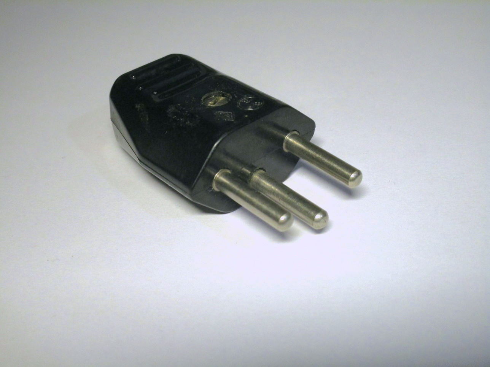
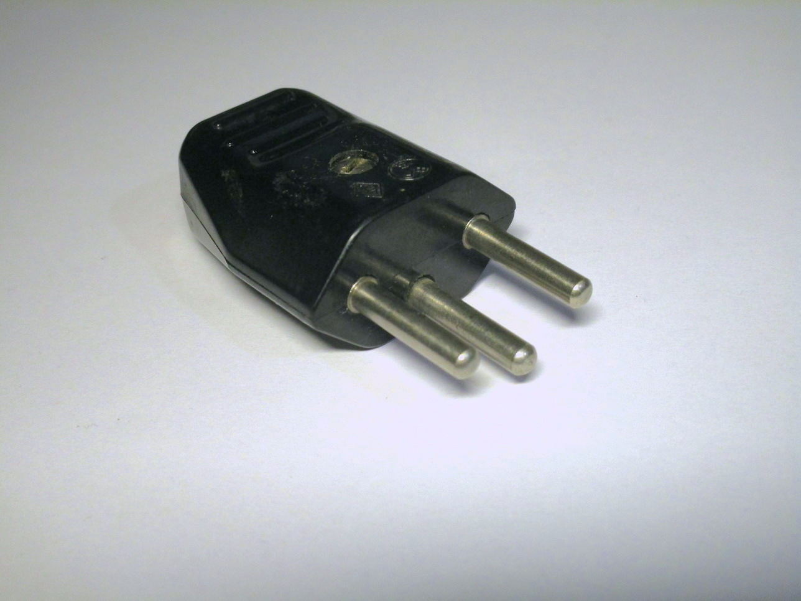

Electrical items from other European countries
German-style electrical items
Standard Schuko socket
Rating: 16A 250V
This is a standard Schuko socket, as found in most places in Europe. It mounts to a standard European wall box (different from the modern Italian ones, although it will work in round boxes found in older houses), either using screws or metal "arms" that push outwards.
The socket is installed by removing the single screw on the front, which removes the front plastic piece. It is then possible to wire it up and install it, then the cover plate can be installed and finally the front plastic can be reinstalled.


Double Schuko socket
Rating: 16A 250V
This socket manages to fit two Schuko outlets in a standard wall box, which would normally only fit one.
{kind=link}
French plugs and sockets
French-style power sockets are interesting due to being one of the only sockets in use in residential homes to
use a metal pin protruding from the socket as the earth connection, instead of side tabs like on the German ones
or a hole like most other standards around the world.
This style of socket is used in some other countries as well, like Belgium, Poland, Czechia and Slovakia.
Standard French socket
Rating: 16A 250V
This particular socket is constructed almost identically as the German one above, as they're both from the same brand, just with the earth pin and a different front plastic moulding.


Twistable French-style plug made by Legrand
Rating: 10/16A 250V
{kind=link}
{kind=link}
{kind=link}
Swiss plugs and sockets
T12 plugs
Rating: 10A 250V
These are two examples of a Swiss T12 plug, the main type of plug used in Switzerland.
It is somewhat similar to the 10A Italian plug, however the earth pin isn't in the middle, which means that
the plug is polarised: it can only be inserted in one way.
Both are older models - because of this, neither of them features any sort of sleeving on the pins. It should be noted however that newer Swiss sockets are recessed, so this wouldn't be as big of a problem there.


{kind=link}
The second plug doesn't feature a cord grip, however it does have some ridges on the moulding to make it easier to plug in and unplug.
 

{kind=link}
{kind=link}
"Resista" hybrid socket, and T12 plug
Rating: 10A 250V
This is an interesting Swiss socket, and the plug that went along with it.
It is branded as "Resista", and it's a T14 socket that's also compatible with T12 plugs.
T14 was the standard of plugs used before the current T12 standard; when it was replaced by the T12 standard
for a brief period you could buy these types of sockets that were compatible with both types of plugs.
The socket has an earth pin since T14 plugs required the socket itself to have an earth pin - just like with
the French sockets. However, T14 sockets are not compatible with French plugs.


{kind=link}
T14 plug
Rating: 10A 250V